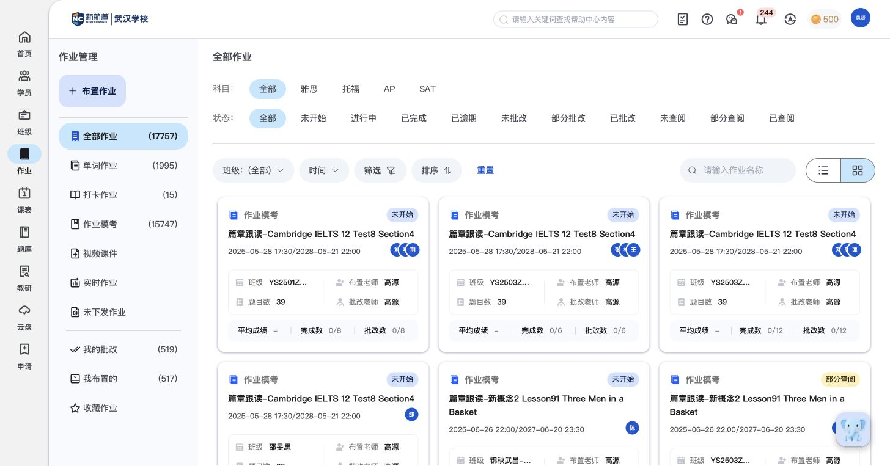
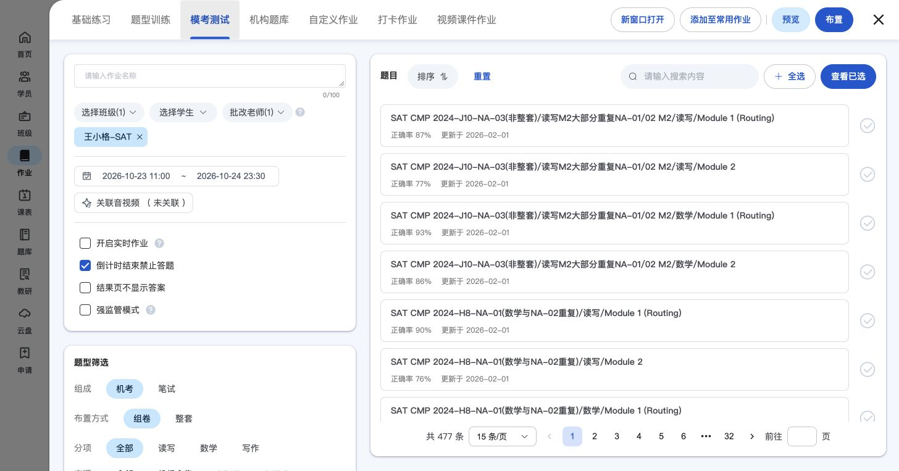
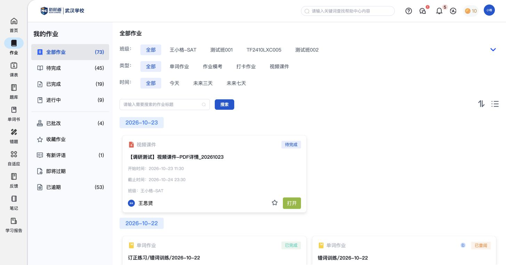

XX067核心教师端
教师作业管理
集中管理跨班级作业，分清自己布置的任务、负责批改的任务及未下发内容。
教师端怎样实现
- “我布置的”与“我的批改”分别组织教师发布的任务和负责批改的任务；也可从全部作业或单词、模考、打卡、课件、实时等类型进入。
- “未下发作业”集中呈现尚未下发的内容；“收藏作业”保留常用任务入口，收藏和再次布置的具体操作统一见作业复用。
- 学习进度区分未开始、进行中、已完成和已逾期；批改进度区分未批改、部分批改、已批改；查阅进度另分未查阅、部分查阅、已查阅，三类状态不能混为一谈。
- 作业卡片保留班级、布置老师、批改老师、起止时间及完成、批改概况，教师可从任务进入对应结果；具体批改、催交和报告不在此重复。

教师端｜作业管理：我的批改、我布置的、未下发作业，以及学习、批改与查阅状态。 点击查看原图操作依据：职责与类型入口 · 状态维度 · 未下发与收藏入口
依据边界：已确认教师作业管理入口与状态分类；“未下发”不等于已确认支持任意草稿编辑或自动定时下发，不据此补写生成与发布规则。
对比自己的产品：是否能跨班级管理任务，并区分布置责任、批改责任、学习进度和查阅进度。
共用功能：布置作业与学习规则 · 作业结果与成绩 · 作业复用
XX028核心教师端
布置作业与学习规则
指定学习内容、班级或学生、批改老师、起止时间与适用规则。
教师端怎样实现
- 选择班级、学生和批改老师，设置名称、开始与截止时间。
- 提供基础练习、题型训练、模考、机构题库、自定义、打卡和视频课件等布置入口。
- 相关入口可配置倒计时、到时禁止作答、结果页答案显示、强监管和实时模式。
- 已选内容可增删、按分项检查；布置前可预览答题页和结果页。SAT预览另有标记复习、笔记和计算器等考试工具。

教师端｜作业 · W63｜设置名称和开始、截止时间（点击查看原图） 点击查看原图原菜单说明：教师 · 布置作业
依据边界：不同入口的规则不完全相同；预览只是检查样式，不是学生实际作答。
对比自己的产品：能否针对教学对象、学习周期和作答要求配置任务。
XX029核心学员端
我的作业
让学员找到待完成、进行中、已完成的任务，并查看新评语。
学员端怎样实现
- 待完成、进行中、已完成对应学习进度；卡片按状态提供进入作业、继续作答、查看结果或打开课件。
- 已批改和有新评语帮助学生找到老师的反馈；即将过期、已逾期帮助学生处理快到期或需要补做的作业。
- 卡片显示作业名称、类型、班级、老师和起止时间；还提供收藏作业入口。

学员端｜我的作业：左侧按进度和反馈组织，右侧卡片显示具体任务与学习入口。 点击查看原图原菜单说明：学员 · 我的作业
对比自己的产品：能否让学生直接找到下一步要做的事，而不只看到一长串作业名称。